Visualization and Graphics
Lesson Outline
Lesson Exercises
Today’s goals
Our final workshop will introduce you to concepts of data visualization and graphics in R. The entire workflow of data exploration is enhanced through looking at your data, whether you’re exploring a dataset for the first time or creating publication-ready figures. Viewing your data provides insight into patterns that can help you explore different hypotheses. No analysis is complete without a solid graphic.

Graphics capabilities in R have improved tremendously in the last ten years. The de facto plotting library is ggplot2 as part of the tidyverse, but there are many other packages available that enhance or build on existing functionality. The base R installation comes with it’s own set of plotting functions. These are useful for quick and dirty exploration but you’ll quickly find that these methods are tedious. We’ll start the lesson today with a cursory look at some of the base R plotting functions. Most of what we’ll discuss today will focus on ggplot2.
As before, we only have two hours to cover the basics of graphing in R. It’s an unrealistic expectation that you will be a graphics ninja after this training. As such, the goals are to expose you to fundamentals and to develop an appreciation of what’s possible. I also want to provide resources that you can use for follow-up learning on your own.
Today you should be able to answer (or be able to find answers to) the following:
- What can I do with base R plots?
- What are the requirements of every ggplot?
- What are geoms?
- What are facets?
- What are themes?
- How do I save a plot?
Exercise 1
We’re going to start the workshop by setting up a script in a new or existing RStudio project. We’re going to work with the fully wrangled dataset we created at the end of the last training. In the interest of time, you can download the formatted data here. This dataset is the joined sediment chemistry and station data for Bight08. We’ve already selected and renamed the columns we need from the chemistry data, filtered to get the parameters we want, and joined it with the station data to include latitude, longitude, and depth. As a final step, we’ll create a new categorical column for depth using the cut function.
Create a new project in RStudio or use an existing project from last time. If creating a new project, name it “viz_workshop” or something similar.
Create a new “R Script” in the Source (scripting) Panel, save that file into your project and name it “graphics_and_viz.R”.
Add in a comment line at the top stating the purpose. It should look something like:
# Graphics and vizualization in R. At the top of this script, add some code to load thetidyverseandreadxlpackages.Make a folder in your project called
dataif you don’t have one already. Place the formatted data (download) into this folder.Add some lines to your script to import and store the formatted data in your Enviroment. Use the
read_excelfunction to import"data/formatted_data.csv". Assign it to a variable named “chemdat”.Use the the
mutatefunction withcutto create a new categorical column for depth. Name itdepth_catand cut it at 15 and 150 meters. Remember thatcuthas two arguments for thebreaksandlabels. Thebreaksargument will look likebreaks = c(-Inf, 15, 150, Inf)and thelabelsargument will look likelabels= c('shallow', 'mid', 'deep').Check the data when you’re done with
Vieworhead. Also see how many values you have in each new category indepth_cat(hint:table(chemdat$depth_cat)).
# Graphics and vizualization in R
# import libraries (use install.packages function if not found)
library(tidyverse)
library(readxl)
# import formatted data
# mutate depth to create a new categorical depth column
chemdat <- read_excel('data/formatted_data.xlsx') %>%
mutate(depth_cat = cut(depth, breaks = c(-Inf, 15, 150, Inf), labels = c('shallow', 'mid', 'deep')))
# check data
head(chemdat)
View(chemdat)
table(chemdat$depth_cat)Base R graphics
In theory, all of your plotting needs can be accomplished with functions in base R. However, these graphics are not easy to customize and it’s very tedious to create publication-quality graphics. For these reasons, base R graphics are rarely taught but I believe they still serve a purpose in the data exploration workflow. Base R graphics are extremely fast and simple to use for exploring data. I caution you in using these functions for anything beyond simple exploration.
My most frequent use for base R graphics inlude:
- Simple scatterplots to see how two variables are related (
plot) - Histograms to explore the distribution of a variable (
hist)
We’ll explore some of these simple tools in base R with the mpg dataset. The workhorse plotting function is plot. Let’s make a simple plot of highway mileage vs engine size.
plot(hwy ~ displ, data = mpg)
We created this plot using the formula notation. We can also create the plot by calling the columns directly.
plot(mpg$displ, mpg$hwy)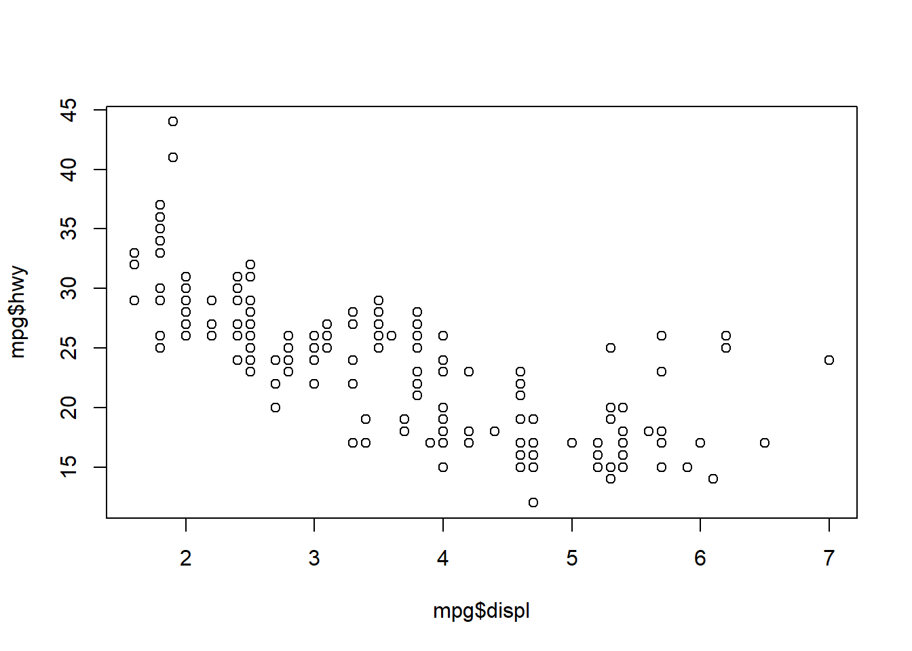
Confusing right? Let’s have a look at the help file for plot.
?plot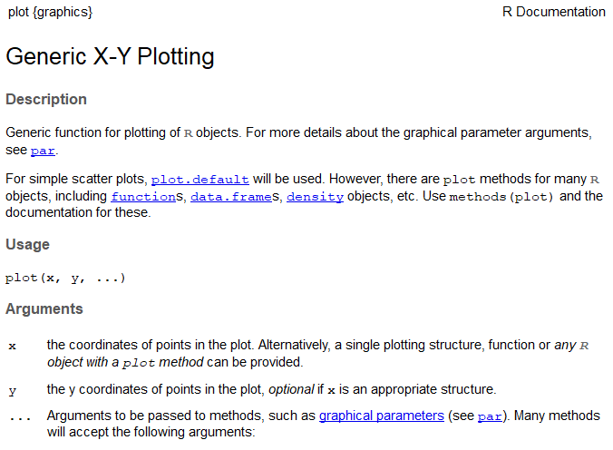
This help file lays out some of the basics of plot formatting. We can change the type of plot using the type argument (here, we can only use points), give it a title with main, and change labels on the x and y axes with xlab and ylab.
plot(hwy ~ displ, data = mpg, main = 'Highway mileage by engine size',
xlab = 'engine size (l)', ylab = 'highway (mpg)')
The help file for the plot function also has this ambiguous ... argument. You’ll see this argument for many functions in the help files. This means that the function accepts arguments from other functions. In this case, the plot function accepts arguments from the par function which is used for setting graphical parameters in base R. Let’s look at the help file for par.
?par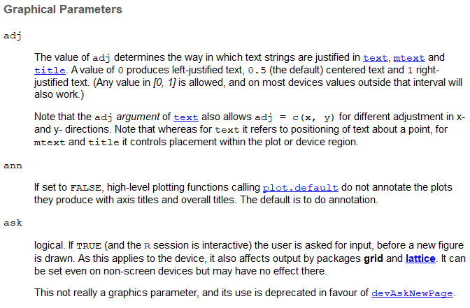
The most useful section in this help file is the description of the actual graphical parameters you can set. Some useful ones are the cex family of arguments for sizing, col family of arguments for color, the pch argument for point types, and the family argument for font. All of these arguments can be passed directly to the plot function or separately with the par function.
plot(hwy ~ displ, data = mpg, main = 'Highway mileage by engine size',
xlab = 'engine size (l)', ylab = 'highway (mpg)',
col = 'blue', pch = 18, cex = 0.75, family = 'serif')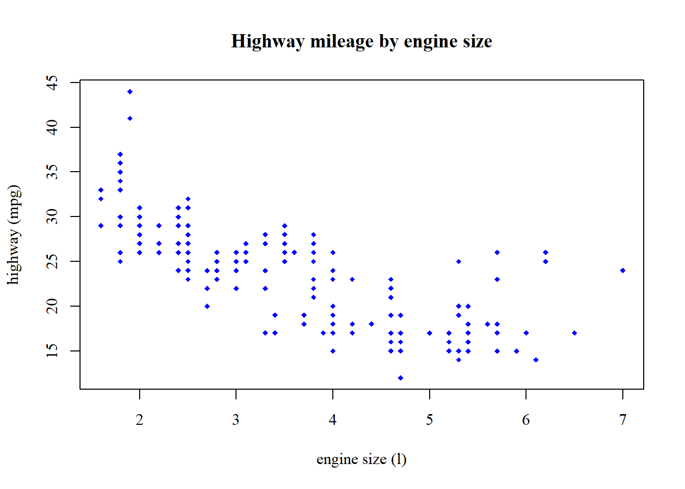
Or like this…
par(col = 'blue', pch = 18, cex = 0.75, family = 'serif')
plot(hwy ~ displ, data = mpg, main = 'Highway mileage by engine size',
xlab = 'engine size (l)', ylab = 'highway (mpg)')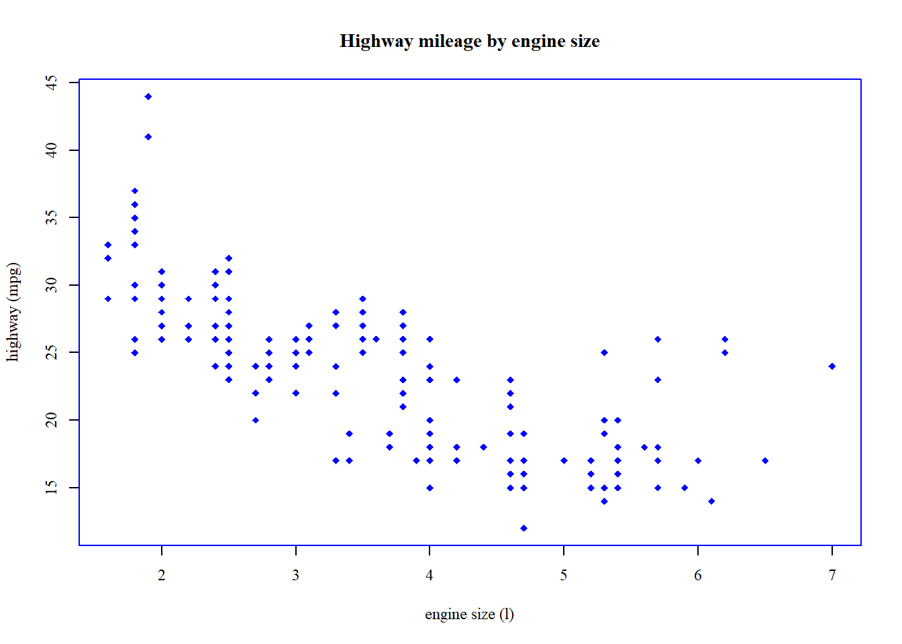
Notice how the plots are different depending on where the additional arguments are used. Confusing, right? You’ll waste a lot of time trying to tweak the base graphics.
The hist (histogram) function is the only other plotting function from base R that is worth showing. This gets you info on the basic distribution of a variable and is a graphical way of assessing the spread and central tendency (e.g., mean) of a variable.
hist(mpg$hwy)
The only useful argument in hist is breaks that controls the number of bins.
hist(mpg$hwy, breaks = 20)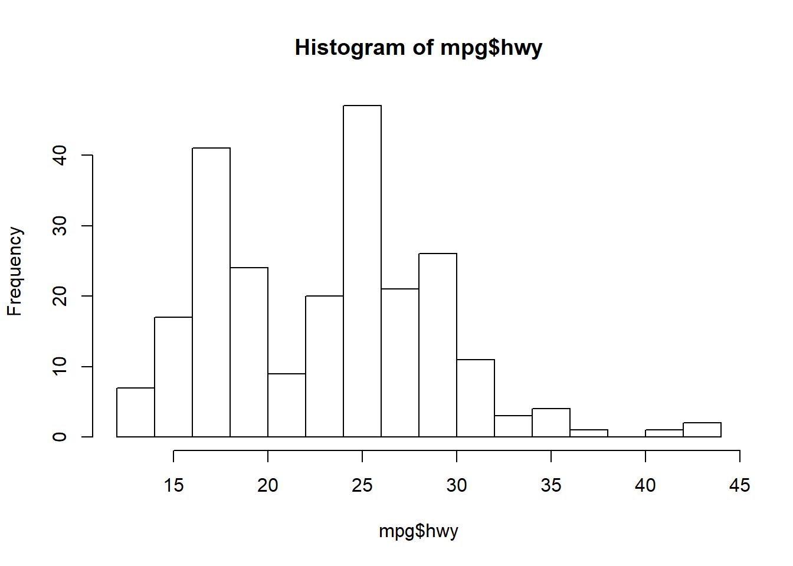
Exercise 2
Let’s make some simple graphics of our chemistry dataset using base R. We’ll make a histogram of chlorophyll and a scatterplot of chlorophyll versus total organic carbon using the plot function. We’ll also add a title and better axis labels to the plots to make them slightly more palatable.
Make a histogram of
TotalCHLusing thehistfunction. What’s the approximate range of chlorophyll? What’s the most commonly observed value? Try changing thebreaksargument.Make a scatterplot of
TotalCHlversusTOCwith theplotfunction. Try creating the plot using theformulanotation (hint:TotalCHL ~ TOC). Remember you have to use thedataargument when you’re using the formula (i.e.,data = chemdat).Give the plot an informative title using the
mainargument directly in the plot function, something likemain = "Chlorophyll vs TOC for Bight08".Change the axis labels to include the units using the
xlabandylabarguments, something likexlab = "Chl (ug/L)", ylab = "TOC (%)".Use
parbefore theplotfunction to change the font toserif, (hint:par(family = "serif"))).
# histogram
hist(chemdat$Total_CHL)
# scatterplot
plot(Total_CHL ~ TOC, data = chemdat)
# scatterplot with title
plot(Total_CHL ~ TOC, data = chemdat, main = 'Chlorophyll vs TOC for Bight08')
# scatterplot with title and better axis labels
plot(Total_CHL ~ TOC, data = chemdat, main = 'Chlorophyll vs TOC for Bight08',
xlab = 'TOC (%)', ylab = 'Chl (ug/L)')
# change the font with par
par(family = 'serif')
plot(Total_CHL ~ TOC, data = chemdat, main = 'Chlorophyll vs TOC for Bight08',
xlab = 'TOC (%)', ylab = 'Chl (ug/L)')GGplot2
Basics
The ggplot2 package (full reference) is a huge improvement over base R because it was developed following a strict philosophy known as the grammar of graphics. This philosophy was designed to make thinking, reasoning, and communicating about graphs easier by following a few simple rules. Like building a sentence in speech (aka grammar), all graphs start with a foundational component that is used for building other graph pieces.
With ggplot2, you begin a plot with the function ggplot(). ggplot() creates a coordinate system that you can add layers to. The first argument of ggplot() is the dataset to use in the graph. So ggplot(data = mpg) creates an empty base graph.
ggplot(data = mpg)You complete your graph by adding one or more layers (aka geoms) to ggplot(). The function geom_point() adds a layer of points to your plot, which creates a scatterplot. Ggplot2 comes with many geom functions that each add a different type of layer to a plot.
ggplot(data = mpg) +
geom_point()Each geom function in ggplot2 takes a mapping argument. This defines how variables in your dataset are mapped to visual properties. The mapping argument is defined with aes(), and the x and y arguments of aes() specify which variables to map to the x and y axes. ggplot2 looks for the mapped variable in the data argument, in this case, mpg.
ggplot(data = mpg) +
geom_point(mapping = aes(x = displ, y = hwy))Just remember these requirements:
- All ggplot plots start with the
ggplotfunction - It will need three pieces of information: the data, how the data are mapped to the plot aesthetics, and a geom layer
The core unit of every ggplot looks like this:
ggplot(data = <DATA>) +
<GEOM_FUNCTION>(mapping = aes(<MAPPINGS>))Applied to the data:
ggplot(data = mpg) +
geom_point(mapping = aes(x = displ, y = hwy))
More commonly, the aes function that defines the mapping is included in the initial call to ggplot. This will globally define the mapping to all geoms in a plot, instead of for only one geom. There may be different reasons to globally apply the aesthetics or separately for each geom depending on the data.
ggplot(data = mpg, mapping = aes(x = displ, y = hwy)) +
geom_point()
Why the need for this complicated structure? The syntax of mapping aesthetics to a dataset lets you easily modify components of an existing plot. Additional datasets and geoms can easily be added to the plot with +.
Let’s explore some of the other geoms.
As lines…
ggplot(mpg, aes(x = displ, y = hwy)) +
geom_line()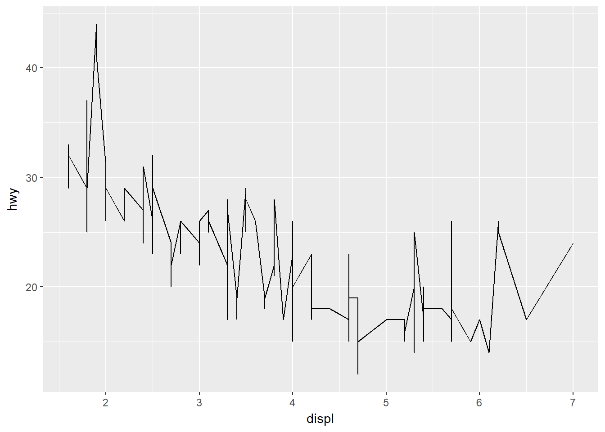
As counts…
ggplot(mpg, aes(x = displ, y = hwy)) +
geom_count()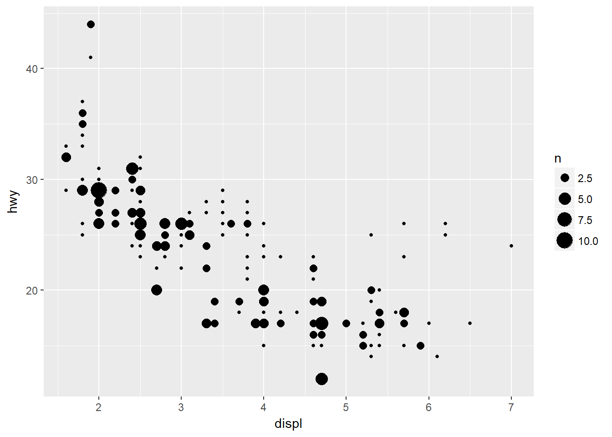
As density…
ggplot(mpg, aes(x = displ, y = hwy)) +
geom_density2d()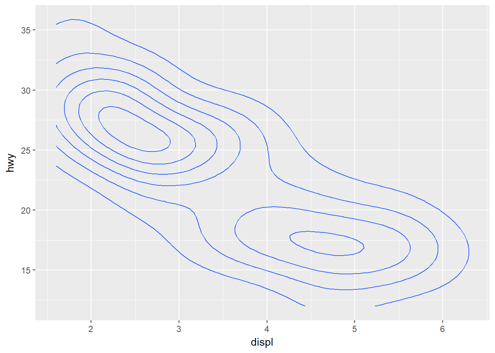
As a line range…
ggplot(mpg, aes(x = displ, y = hwy)) +
geom_linerange()Error: geom_linerange requires the following missing aesthetics: ymin, ymax
Execution haltedOh snap, what happened? This error is telling us that the geom we just tried is missing some required aesthetics in the plot. Here we’ve only used the x and y aesthetics but it looks like it requires ymin and ymax. Lets look at the help file for geom_linerange.
?geom_linerange
Looks like we don’t have the required aeshetics, nor does it make sense to use this geom because it’s not appropriate for the data. What about the requirements for geom_point?
?geom_point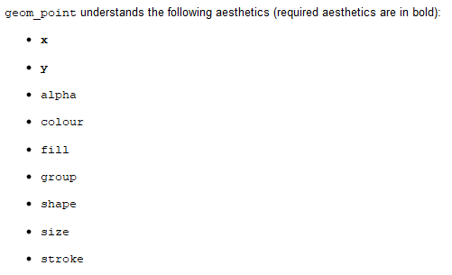
We’ve got the required aesthetics in our plot. Let’s add some others that we can use with geom_point.
Changing the color:
ggplot(mpg, aes(x = displ, y = hwy, colour = drv)) +
geom_point()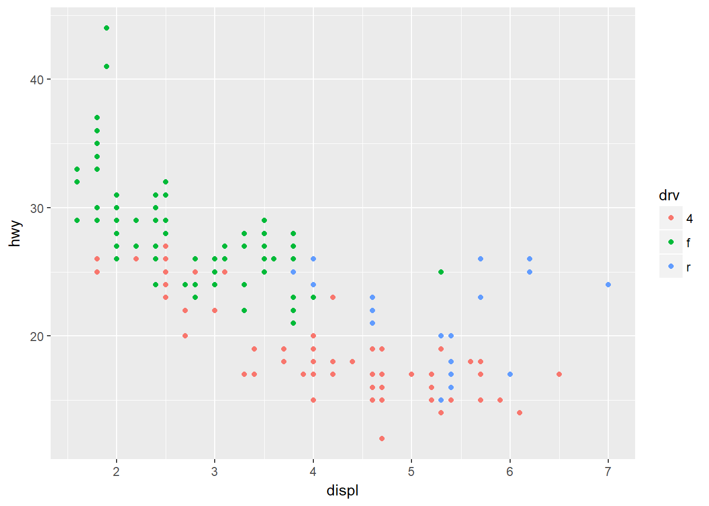
Changing the size:
ggplot(mpg, aes(x = displ, y = hwy, size = displ)) +
geom_point()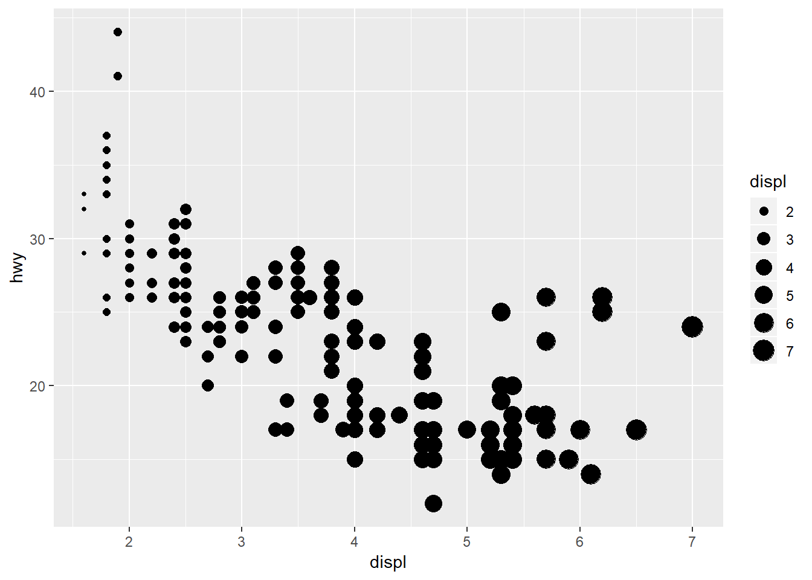
Changing the shapes:
ggplot(mpg, aes(x = displ, y = hwy, shape = drv)) +
geom_point()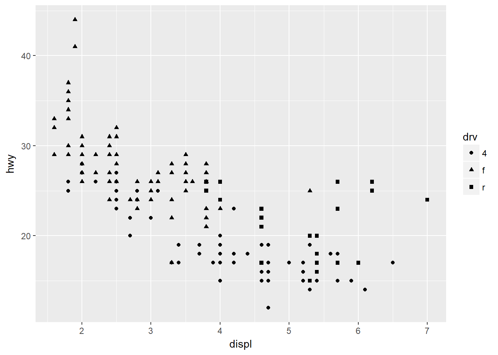
In all of the above examples we’ve mapped an aesthetic to a variable in our dataset. We can just as easily modify the plot without mapping it to a variable (i.e., changing a part of the plot independent of the data). For example, maybe we want to change the color of the points using a single color for everything. Notice the placement of colour outside of the aes mapping function.
ggplot(mpg, aes(x = displ, y = hwy)) +
geom_point(colour = 'red')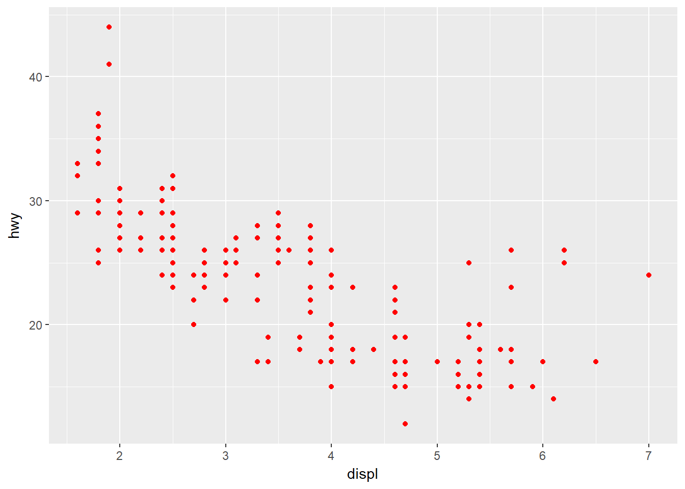
Exercise 3
Let’s reproduce the scatterplot we created in exercise 2 using ggplot. This requires us to map the TOC and TotalCHL variables to the x and y aesthetics for geom_point.
Setup your initial plot with
ggplot. Map the x variable toTOC, the y variable toTotal_CHL, and the colour variable todepth_cat. The setup should look like this:ggplot(chemdat, aes(x = TOC, y = TotalCHL, colour = depth_cat))). What happens if you run only this code?Add the
geom_point()geom to your plot using the+operator. Remember the correct placement of+, it always occurs in the line preceding the layer that is being added to the plot.Chlorophyll follows a log-normal distribution. We can easily transform the y-axis by adding a scale. GGplot has multiple scale functions that accomplish different tasks, all of which relate to setting limits or characteristics of measured variables in your data. Add the following after
geom_point()(remember to put a+aftergeom_point()):scale_y_continuous('log-chl', trans = 'log10'). How does the plot look now?
ggplot(chemdat, aes(x = TOC, y = Total_CHL, colour = depth_cat)) +
geom_point() +
scale_y_continuous('log-chl', trans = 'log10')Modifying plot components
There are countless ways we can modify a ggplot, either by manipulating the appearance or adding information that improves our understanding of what we see. In the previous exercise, we used a scale to transform an axis. In this next section we’ll cover three additional ways to modify a plot:
- Modifying the appearance of the plot as a whole can be done using the
themefunction for individual parts or by using a pre-packaged theme that modifies many parts at once. - Adding statistical summaries with
stat_smooth - Making multi-panel plots with
facet_wraporfacet_grid.
First I’ll show you how to modify the appearance to your liking. Individual components can be modified with theme. Here the legend is moved to the top, the minor grid lines between axis ticks are removed, and the gray panel background is changed to light blue. Check the help file for theme to see all the options.
ggplot(mpg, aes(x = displ, y = hwy, colour = drv)) +
geom_point() +
theme(
legend.position = 'top',
panel.grid.minor = element_blank(),
panel.background = element_rect(fill = 'lightblue')
)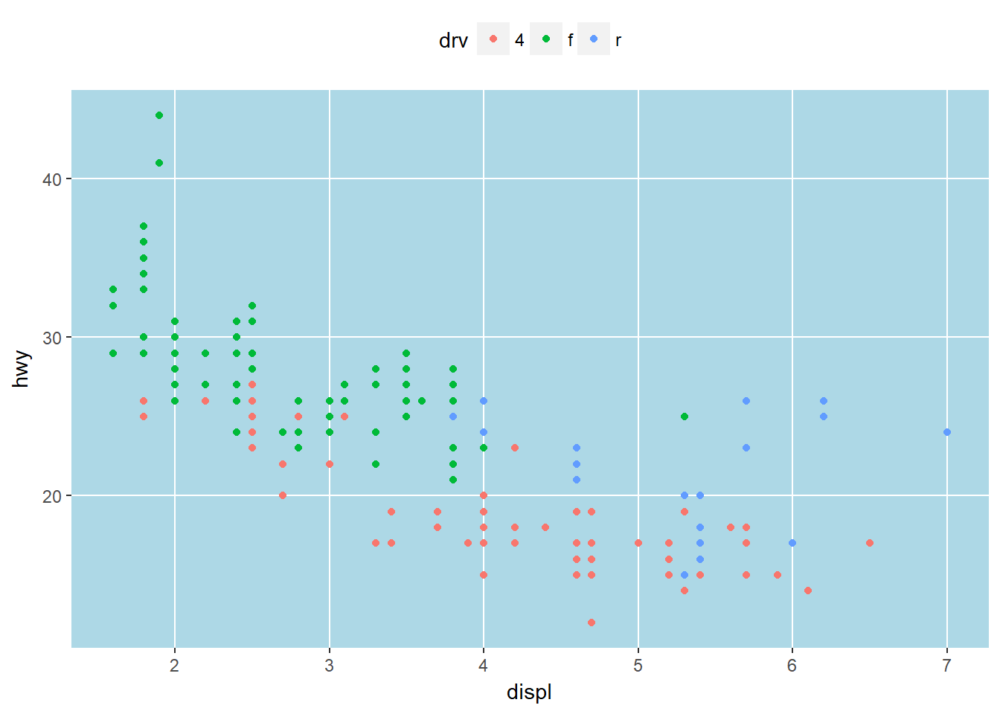
Changing plot elements with theme can take some practice because there’s lots to modify. In some respects, this is how ggplot is similar to base R. With flexibility comes tedium. Fortunately, there are several pre-packaged themes that modify several components at once. See here for the full documentation. There are also additional packages available that supplement the existing themes inggplot (see here.
Black and white:
ggplot(mpg, aes(x = displ, y = hwy, colour = drv)) +
geom_point() +
theme_bw()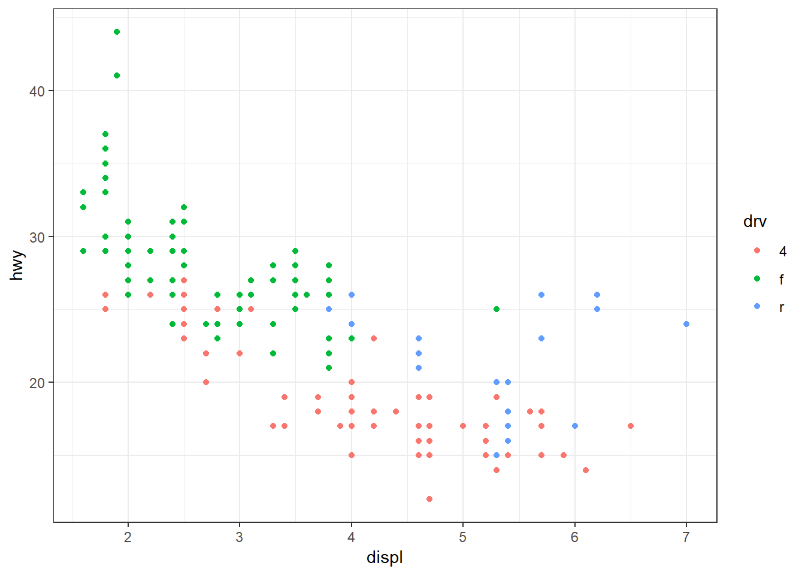
Minimal:
ggplot(mpg, aes(x = displ, y = hwy, colour = drv)) +
geom_point() +
theme_minimal()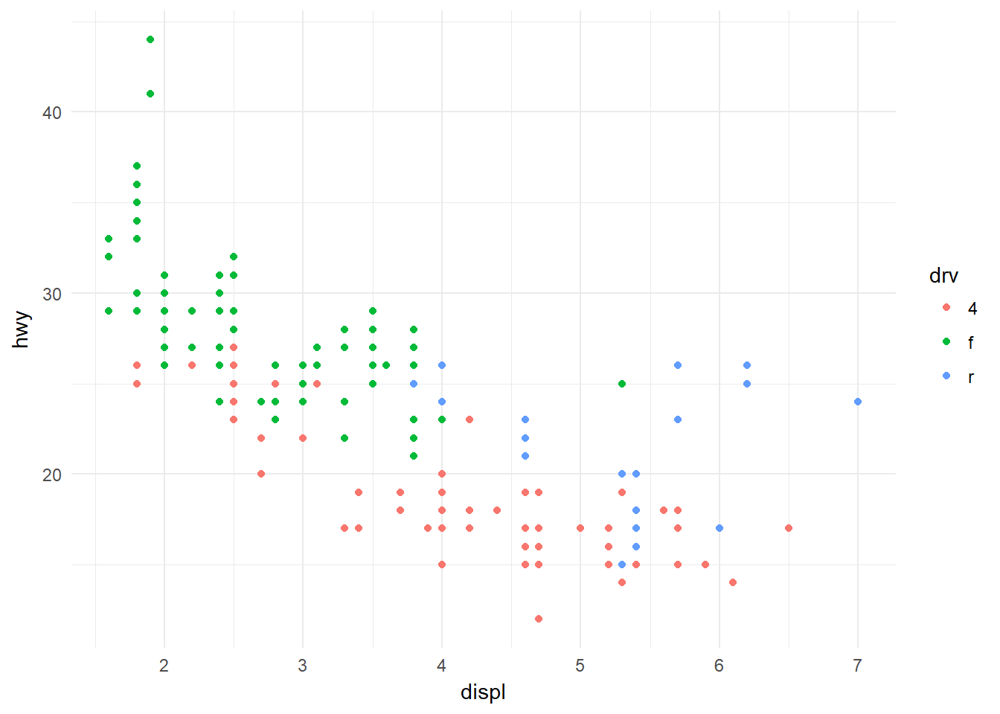
Classic:
ggplot(mpg, aes(x = displ, y = hwy, colour = drv)) +
geom_point() +
theme_classic()
The pre-packaged themes with ggplot have the added benefit of easily changing the global font types and sizes in the plot. These are modified by including the arguments base_family and base_size.
ggplot(mpg, aes(x = displ, y = hwy, colour = drv)) +
geom_point() +
theme_bw(base_family = 'serif', base_size = 16)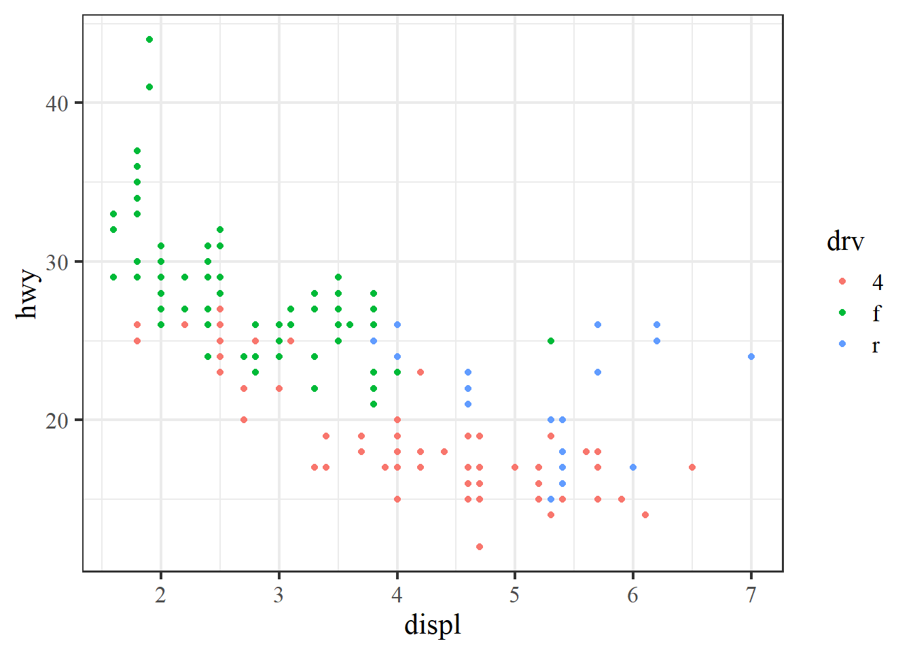
In addition to it’s functional syntax, the real power of ggplot is the ability to add components to the plot that let you quickly evaluate relationships or trends in the data. Statistical relationships can be added with stat_smooth.
ggplot(mpg, aes(x = displ, y = hwy, colour = drv)) +
geom_point() +
stat_smooth()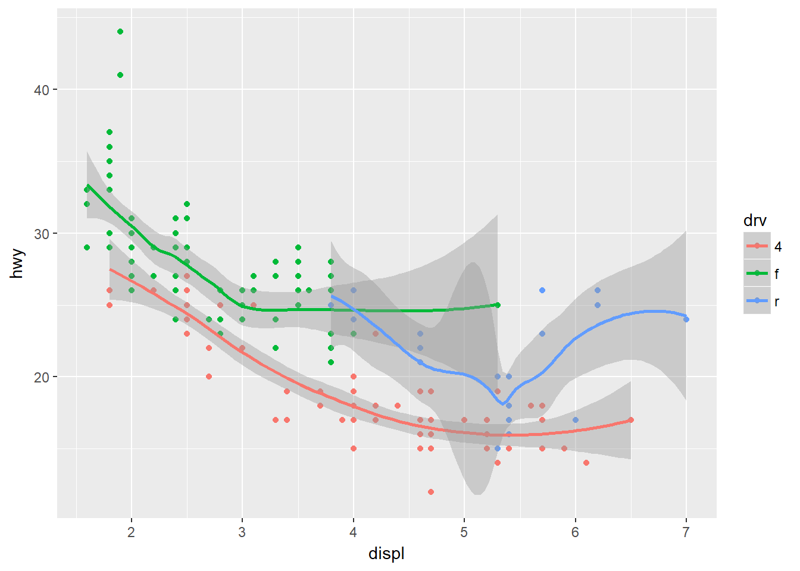
Notice that we get one smooth for each type of drive train. This is because we’ve mapped colour to the drive train. Both the geom_smooth and stat_smooth functions use colour as an aesthetic so the global aes function applies to both. We can change this behavior by moving the location of the colour aesthetic. Here color is only mapped to the points.
ggplot(mpg, aes(x = displ, y = hwy)) +
geom_point(aes(colour = drv)) +
stat_smooth()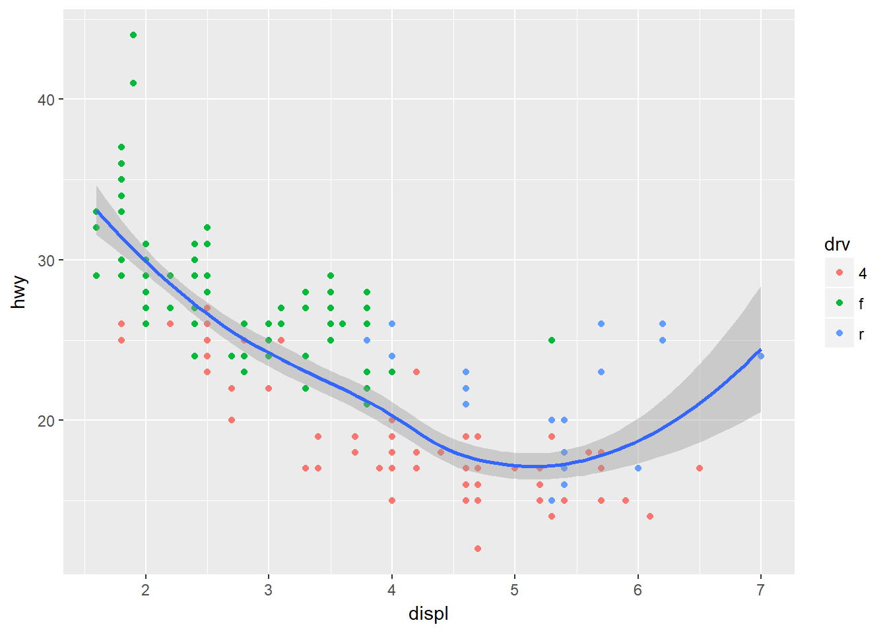
By default the stat_smooth function uses a non-linear smooth, either a locally estimated polynomial or generalized additive model depending on size of the dataset. We can change this using the method argument, as for a linear model.
ggplot(mpg, aes(x = displ, y = hwy, colour = drv)) +
geom_point() +
stat_smooth(method = 'lm')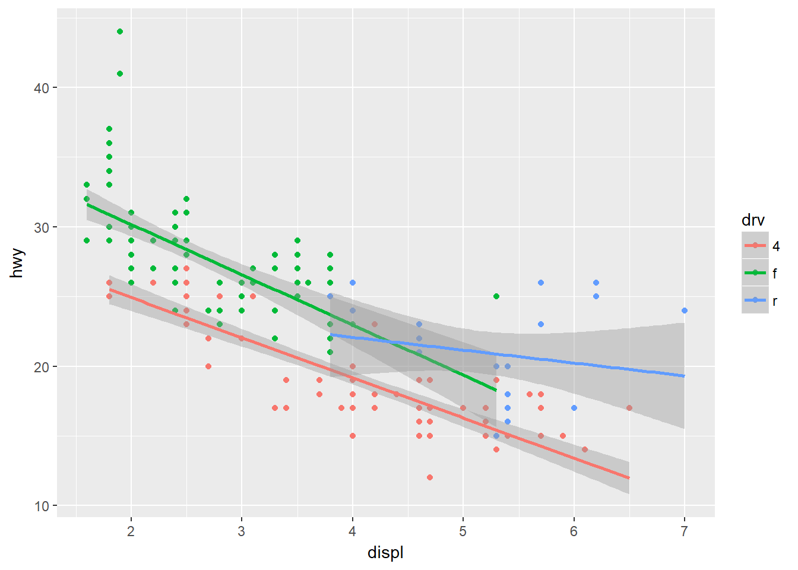
Finally, ggplot provides some simple functions to create multi-panelled plots. This is useful for viewing different groups of the data as they relate to a variable in the dataset. The facet_wrap function is one of two functions in ggplot that can be used for multi-panel plots (the other being facet_grid, which is similar but different). To create facets, we have to specify which variable you’re using that acts as a grouping variable for each subplot. This is defined using the ~ sign followed by the variable name within facet_wrap. The ncol (or nrow) argument also indicates how many columns (or rows) in the multi-panel to create.
ggplot(mpg, aes(x = displ, y = hwy, colour = drv)) +
geom_point() +
stat_smooth(method = 'lm') +
facet_wrap(~ drv, ncol = 3)
The scales argument is also a useful part of facet_wrap. By default, the x and y axes are fixed between the panels. You can change this behavior by using scales = "free". Be careful using this feature because it can lead to different interpretations of the magnitude of trends.
ggplot(mpg, aes(x = displ, y = hwy, colour = drv)) +
geom_point() +
stat_smooth(method = 'lm') +
facet_wrap(~ drv, ncol = 3, scales = 'free')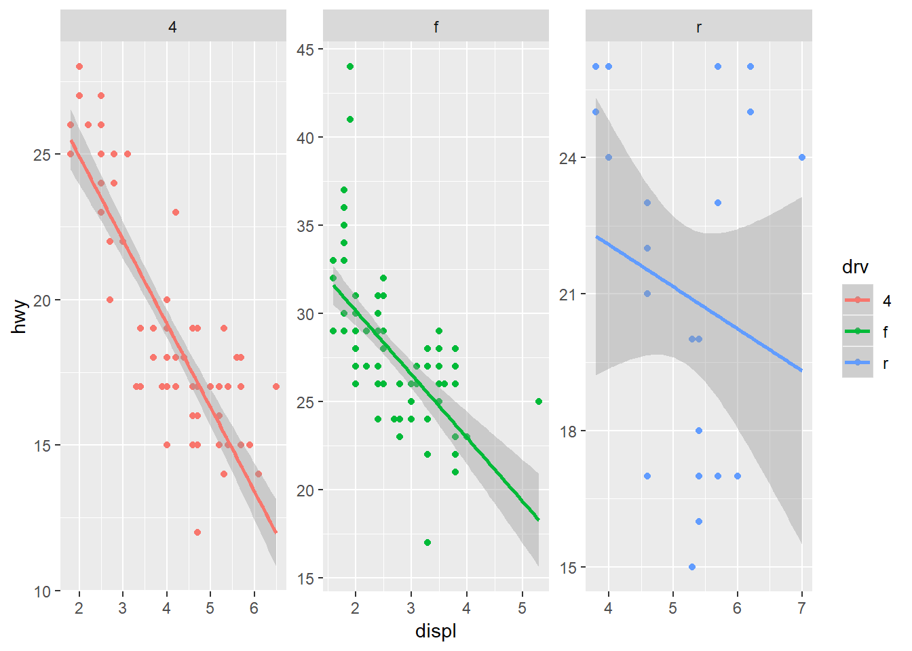
Exercise 4
Let’s modify the scatterplot we created in exercise 3 by adding a theme, a statistical summary, and facets. We’ll map the stat_smooth function to depth category and also use this variable to create a three-panel plot.
Setup the initial plot as before. Map the x variable to
TOC, the y variable toTotal_CHL, and the colour variable todepth_cat. Add thegeom_pointgeom and thescale_y_continuousscale withtrans = "log10"to transform chlorophyll.Add one of the pre-packaged themes to the plot:
theme_bw(),theme_classic(), ortheme_minimal(). You can also use any of the other themes from the tidyverse (see here) or use one from theggthemespackage (see here). You’ll have to install and load theggthemespackage if using the latter.Add the
stat_smoothfunction with the argumentmethod = "lm"to add linear smooths between chlorophyll and TOC for each depth group.Use
facet_wrapto create a three-panel plot by depth category (hint:facet_wrap(~ depth_cat, ncol = 3)).You can change the scaling of the axes to make them specific to each facet. Try using the argument
scales = "free"withinfacet_wrap. How does this change the interpretation?
ggplot(chemdat, aes(x = TOC, y = Total_CHL, colour = depth_cat)) +
geom_point() +
scale_y_continuous('log-chl', trans = 'log10') +
theme_minimal() +
stat_smooth(method = 'lm') +
facet_wrap(~ depth_cat, ncol = 3, scales = 'free')Saving your plots
A quality plot deserves to be saved and shared. As you can imagine, there are several ways to save a plot in RStudio. The easiest way (which I don’t recommend) is to use the export feature from the plot viewing pane.

Although this is convenient, you don’t have fine control over many options that can really make your graphic pop. I recommend using either the ggsave function that comes with the tidyverse, or preferably, one of the available graphics devices from base R (bmp, jpeg, png, tiff, eps, ps, tex, svg, wmf, and my favorite, pdf).
The ggsave function works only with ggplot objects. You can contol where the plot is saved, the file type, plotting dimensions, resolution, and a few other minor options. By default, it will save the last ggplot that you made.
ggsave('lessons/figure/myfig.jpg', device = 'jpeg', width = 5, height = 4, units = 'in', dpi = 300)The ggsave functions uses the graphics devices from base R behind the scenes. You can always use these directly to save any type of plot (ggplot, base, etc.). These work a bit differently from regular functions. First, you “open” a graphics device by executing the function (e.g., png(), jpeg(), etc.) at the command line. Then you execute your plot command and finish by “closing” the device with dev.off(). In a script, it will look something like this.
# save a plot as png file
png('lessons/figure/myfig.png', width = 5, height = 4, units = 'in', res = 300)
plot
dev.off()The value of this approach is the ability to fine tune the output for your graphics. You can save as many figures as you like when the graphics device is open, just make sure to use dev.off() when you’re done.
Next time
Now you should be able to answer (or be able to find answers to) the following:
- What can I do with base R plots?
- What are the requirements of every ggplot?
- What are geoms?
- What are facets?
- What are themes?
- How do I save a plot?
Please fill out the final feedback form for all of our trainings!
Attribution
Content in this lesson was pillaged extensively from the USGS-R training curriculum here and R for data Science.